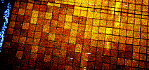
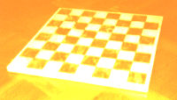

Living Furniture Living Furniture

Shitty mosaic floor tiles computing cellular automata on the floor of a subway station.
FUTANT KING FURNITURE INC.
Briefing Draft.
The goal of the Futant King line of furniture is to make tools and items that force people into interaction with the abstract matematical lifelike patterns of cellular automata. It's possible to have a rewarding meeting with this abstract realm without knowing anything about it beforehand. It's about non-life lifelike patterns that can react to human presence.
One of the questions that spawned this project was why architecture is so dull. People and nature are merely bystanders in a 'perfect' architectural world of blueprints and sketches. The problem is that architecture is more a source of irritation than perfection. Poorly designed buildings with walls that keep getting into the way, or public areas that make people feel uncomfortable. Architecture should be like an interface where life and lifeless matter meet.
The possibility of embedded computation (and the possibility of developing this technology by reusing old computers for homebrew projects) makes it realistic to make furniture and architectural items that run cellular automata patterns now, not in ten years. A feature of cellular automata systems is that they can be made reactive (or interactive). By wiring up sensors that manipulate the state of an individual cell it's possible to make individual cells react to touch, or whatever weird means of communication that is chosen. Connecting an old Macintosh, Amiga, or Atari to a set of lights and sensors, programming the CA and setting up the computer to load the CA on autoboot will result in a device that fulfills the wishes of the Futant King Design Laboratories. Futant King Furniture aims to create a series of rugged blueprints for cellular automata based furniture during summer/fall 2000.
Why do things in the real world when it's possible to do things in the safe and protected-mode world of the computer operating system? Perhaps it's about keeping it real, and making something that lasts longer than a forgotten computer program. Of course it's possible to frame an old laptop screen and hang it onto the wall, let it run a cellular automata software, but then, it'd still be inside the computer world. The Futant King design project is about literally dissolving the boundaries that separate machine / life, computer / wiring systems, and human / architecture from each other.
Imagine a large, wired checkerboard floor installed in a sterile 80:s atrium or in another public area. The bricks on the floor have two states, they can either be white or black depending on the state of the neighbouring bricks. The states are computed according to the rules of a special cellular automaton called Conway's Games of Life. In this game, a cell with exactly two neighbors survives. If it has more than 2 neighbors it dies from 'overcrowding', and if it has less it dies from 'starvation'. The 'dynamic barcode' pattern below is running a one-dimensional version of this rule, and so is the 'theme applet' of this issue (the one that appears right below the headlines of all the articles.)
Futant KingDifferent patterns will run across the Life floor, domino effects initiated by pressure input from standing or walking humans. A group of kids are arguing with each other and jumping around in a corner of the floor, trying to create a stable pattern, and to keep their pattern from being wrecked by gliding patterns caused by people walking by.

Another usage for cellular automata would be interactive drinking tables / chess tables or boards that compute Life patterns depending on where the drinking glasses are placed.
There's another form of simple interactivity that is being developed at Futant King R&D and goes by the name "toggling". It's a non-sequential approach to block-puzzle where the controls are unknown. The aim is to de-toggle a complicated picture in the shortest possible time, or in the most beautiful way. There's also toggling without a goal; toggling for toggling's sake. Like meditation, but in a machinic kind of way.
In the future we can look forward to people sitting in their Cushicles, looking at their wallscreen and toggling away at different patterns. Electronics corporations will give away prizes for those who can de-toggle a particularly demanding CA advert of say 300x300 cells. Finding the right combination, or strange attractor that warps the image to a whole again, is a tough job. Many are called, but few have the knack, free time, and devotion that it takes to crack an AD-CA. A whole subculture, a subset of otaku called togglers, dwells under the bright surface of the info-screen. Bulletin boards sport elaborate hacks and reverse-engineering schemes for the ads, and potent neural networks that can easily de-toggle them are mentioned in hushed tones.
- Joel Westerberg